REP 39.25.2 边缘 传感器 框架 
参考 PL:PL 39.25
Removal

在...之后 turning 关闭/脱离 电源开关, 确认 the screen 显示 进入 关闭/脱离 和 the [电源 Saver] button 停止 blinking. 然后, 关闭 the 主 电源 开关, 确认 the [主 电源] 灯 具有 turned 关闭/脱离, 和 然后 关闭 the Breaker 和 unplug 电源插头.
拆卸 HCS 从 上游 设备. (REP 39.1.1)
拆卸后盖板. (REP 39.2.2)
拆卸 上方 盖板. (REP 39.4.1)
拆卸 防篡改 单元. (REP 39.28.1)
拆卸 桨轮. (REP 39.24.2)
拆卸 堆叠器 出纸 辊 Housing. (REP 39.25.1)
拆卸 左侧 前面 Duct. (图 1)
拆卸螺钉（x4）.
拆卸 左侧 前面 Duct.
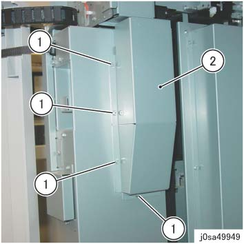
(图 1) sa49949
拆卸 左侧 后面 Duct. (图 2)
拆卸螺钉（x4）.
拆卸 左侧 后面 Duct.
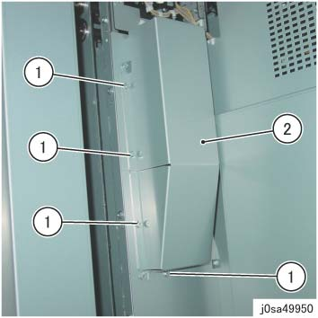
(图 2) sa49950
拆卸 堆叠器 后面 盖板. (图 3)
拆卸螺钉 (x7).
拆卸 堆叠器 后面 盖板.
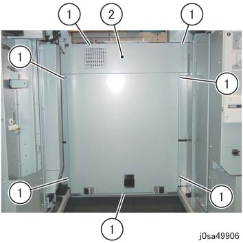
(图 3) sa49906
拆卸 堆叠器 左侧 后面 盖板. (图 4)
拆卸螺钉（x5）.
拆卸 堆叠器 左侧 后面 盖板.
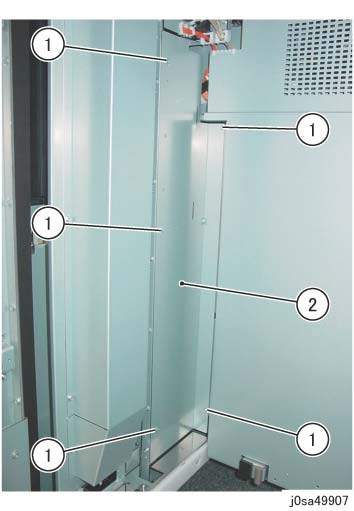
(图 4) sa49907
拆卸 连接器 盖板 of 堆叠器 左侧 前面 盖板. (图 5)
拆卸螺钉（x2）.
拆卸 连接器 盖板.
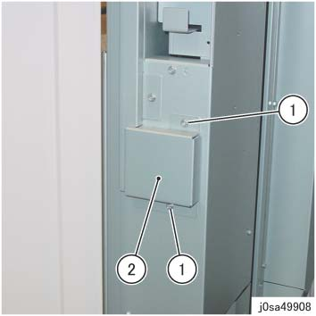
(图 5) sa49908
拆卸线束 盖板. (图 6)
拆卸螺钉（x2）.
拆卸线束 盖板.
松开卡箍并拆除线束.
拆卸 前面 门 Stopper 螺钉.
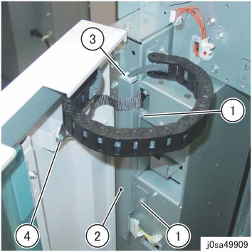
(图 6) sa49909
断开连接器. (图 7)
释放 卡箍 (x3) 和 拆卸 线束.
断开连接器.
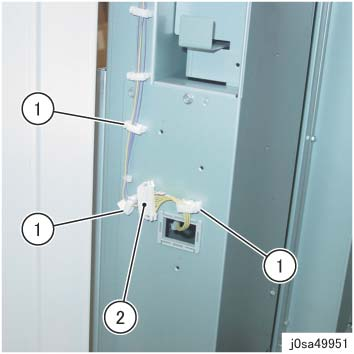
(图 7) sa49951
拆卸 堆叠器 左侧 前面 盖板. (图 8)
拆卸螺钉（x5）.
插入 连接器 Housing 进入 the 方背 hole.
拉动 对接 杠杆.
拆卸 堆叠器 左侧 前面 盖板.
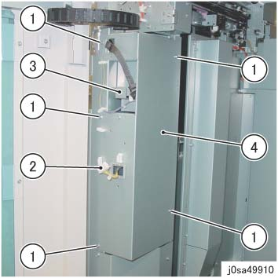
(图 8) sa49910
拆卸 Rail. (图 9)
拆卸螺钉（x2）.
拆卸 Rail.
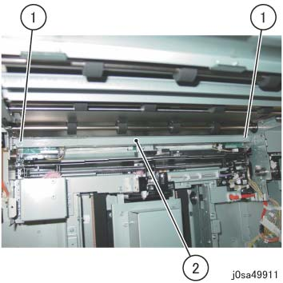
(图 9) sa49911
拆卸支架. (图 10)
拆卸螺钉（x2）.
拆卸支架 (x2).
松开卡箍并拆除线束.
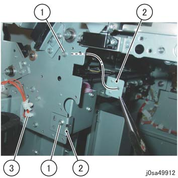
(图 10) sa49912
断开连接器 at ...的后面 边缘 传感器 框架. (图 11)
断开连接器（x3）.
释放 卡箍 (x4) 和 拆卸 线束.
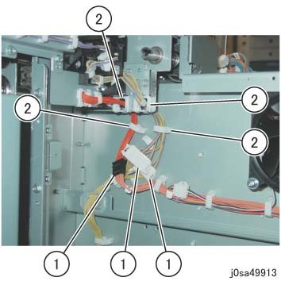
(图 11) sa49913
拆卸 螺钉 该 固定 the 边缘 传感器 框架. (图 12)
拆卸螺钉（x4）.
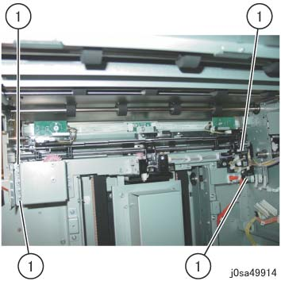
(图 12) sa49914
拆卸 边缘 传感器 框架. (图 13)
拆卸 边缘 传感器 框架.
拆卸 线束 从 the hole.
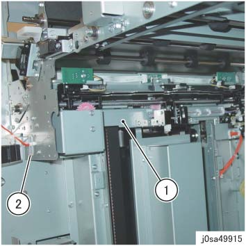
(图 13) sa49915
Removed 边缘 传感器 框架 和 mounting 螺钉（x4）. (图 14)
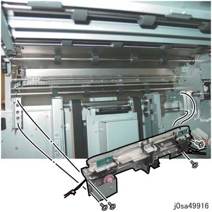
(图 14) sa49916
安装
安装时 堆叠器 左侧 前面 盖板, 确认 the 对接 杠杆 is moving smoothly. (图 15)
(A) 对接 杠杆
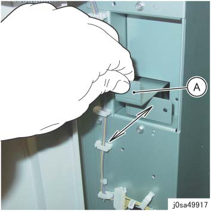
(图 15) sa49917